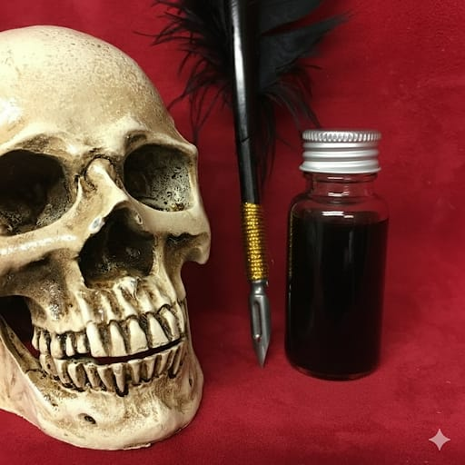

O sangue da vontade e o verbo de poder
TintasMágicas
Preparos artesanais consagrados para escrita, símbolos, selos e expressão ritualística.
Ver na loja
NythraAteliê

“Escrever é fixar no plano da matéria o que a alma já desenhou no invisível.”— Fragmento de prática ritual01 / Essência
O verbo consagrado
As Tintas Mágicas são preparos artesanais consagrados para potencializar intenções e direcionar a energia do trabalho espiritual. Na prática ritualística, atuam como condutoras do propósito, levando a intenção à matéria por meio da escrita.
Cada tinta é preparada para uma finalidade específica, reunindo pigmentos naturais, extratos botânicos e o fundamento correspondente ao rito. São criações destinadas à bruxaria tradicional, à feitiçaria, ao hoodoo e a outras práticas místicas.
Ao escrever, traçar ou marcar com uma tinta ritual, pensamento e gesto tornam-se parte do mesmo ato simbólico.
Finalidades
e caminhos
Aplicações e finalidades que transformam escrita, gesto e suporte em partes de uma mesma prática.
Sigilos e símbolos
Selos e orações
Inscrições em talismãs
Amor e atração
Prosperidade
Proteção e limpeza
Fortalecimento
03 / Orientações
Uso consciente
Cada fórmula possui uma finalidade própria. A escolha da tinta deve acompanhar uma intenção clara e uma prática conduzida com respeito ao fundamento adotado. Use apenas em suportes adequados e proteja pele, olhos, mucosas, roupas e superfícies.
Loja oficial
Fixeo seu propósito
Encontre uma tinta preparada para o seu selo, sigilo ou intenção ritualística.
Conhecer as tintas